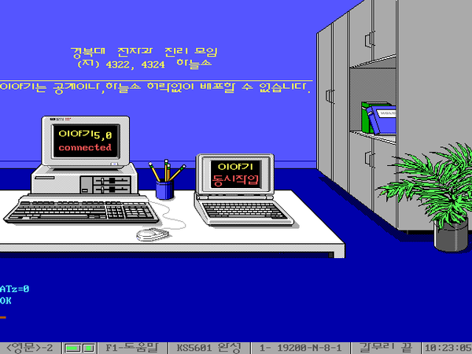
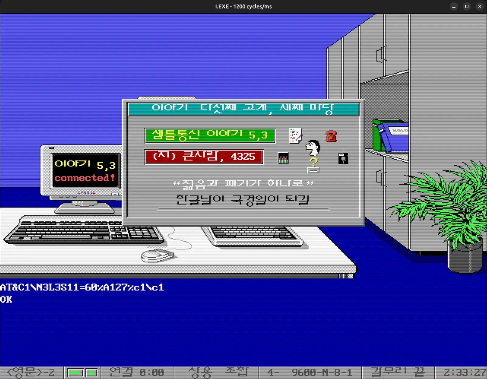

도스 통신 감성을 그대로 살려 비비에스(BBS)로 연결하는 실행 환경을 제공하여 추억을 되살립니다.
GitHub 저장소 보기이야기 1,2 는 원래 모뎀 다이얼업 통신용 도스 프로그램입니다. 이 프로젝트는 도스박스 가상 모뎀과 브리지(bridge) 프로그램을 이용해 기존 조작감을 유지하면서 비비에스(BBS)로 접속할 수 있게 묶어 둔 실행 패키지입니다.
그 시절 접속음과 화면을 보면 괜히 가슴이 뛰지 않나요? 이야기 도스박스는 그 추억을 지금 다시 꺼내 즐길 수 있도록, 윈도우/맥OS/리눅스에서 바로 실행되는 형태로 준비했습니다.
필요한 건 하나뿐입니다. 다운로드해서 간단히 설치하고 실행만 하면, 금세 그 시절로 돌아가 다시 즐길 수 있습니다.
실행하면 위 순서로 연결되어, 익숙한 화면 감성 그대로 접속을 즐길 수 있습니다.
리눅스(AppImage), 윈도우(설치 프로그램), 맥OS(DMG)를 지원합니다.
이야기 원본 실행 흐름을 유지하면서 비비에스(BBS)로 연결합니다.
I.CNF, I.TEL 자동 패치로 브리지 접속 항목/경로를 맞춰줍니다.
접속 시 특유의 모뎀 다이얼/연결음을 들을 수 있어 당시 사용 경험을 최대한 유지합니다.
브리지(bridge) 프로그램에서 완성형(EUC-KR 계열)과 UTF-8 간 텍스트 변환을 처리해 한글 깨짐을 줄입니다.
브리지 프로세스 시작/종료를 런처에서 안전하게 관리합니다.
스케일러/창 크기 등 실행 설정을 프로젝트 환경에 맞춰 조정했습니다.
아래에는 대표 화면 1장만 표시됩니다. 나머지 예시 화면은 팝업에서 확인할 수 있습니다.

실행 영상 미리보기
프로젝트가 도움이 되었다면 후원으로 개발 지속에 힘을 보태주세요.
프로젝트 후원하기